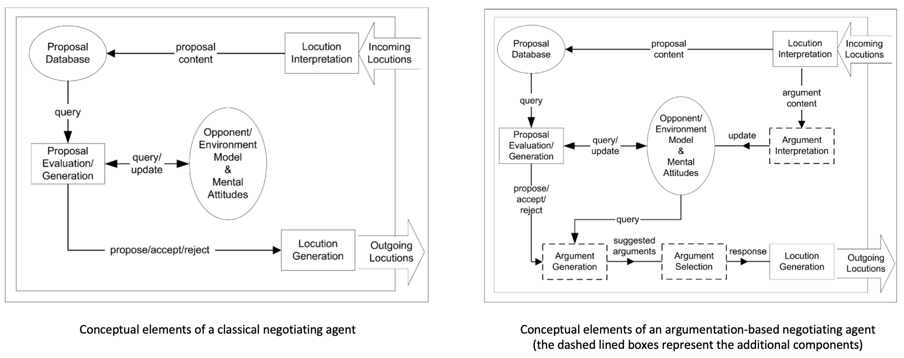
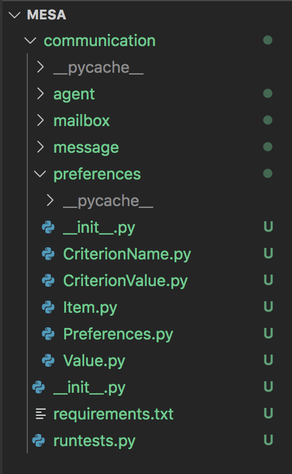
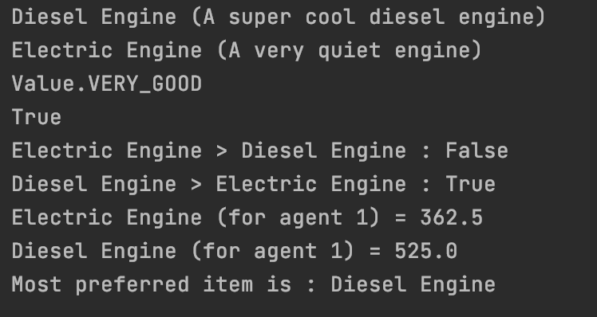
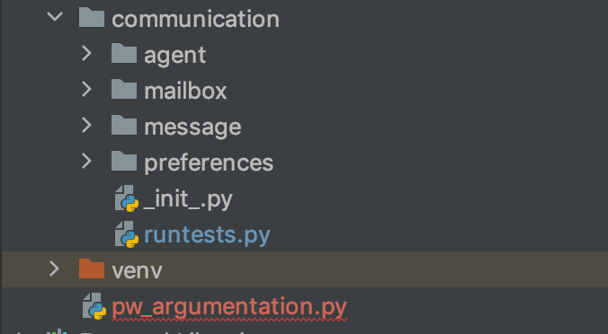

4.1 Introduction¶
As it was discussed in the previsous sessions, Multi-Agent Systems (MAS) are systems composed of software agents that interact to solve problems that are beyond the individual capabilities of each agent. Software agents are elements situated in some environment and capable of flexible autonomous action in order to meet their design objectives. In almost cases, such agents need to interact to fulfill their objctives or improve their performance. Diffent types of interactions/dialogues exit (as it is illustrated in the following table), it depends on the application. In this course, we are interested by negotiation in multi-agent systems.
{kind=link}
Types of dialogue (Norman et al., 2003)¶
Negotiation is a common, everyday activity that most people use to resolve opposing interests. Labor and management negotiate the terms of contracts. Businesses negotiate to purchase raw materials and to sell final products. Lawyers negotiate to settle legal claims before they go to court. Friends negotiate to decide which television programs to watch, etc. The negotiation process is a complex dynamic process. The core of such a process is reciprocal offer and counter-offer, argument and counter-argument in an attempt to agree upon outcomes mutually perceived as beneficial.
In MAS and according to [Rahwan et al., ]
“Negotiation is a form of interaction in which a group of agents, with conflicting interests and a desire to cooperate, try to come a mutually acceptable agreement on the division of scarce resources”.
The use of the word “ressources” here is to be taken in the broadest possible sens. In short, anything that is needed to achieve something.
Before discussing different frameworks for studying automated negotiation, we discuss in what follows some fundamental concepts in the automated negotiation literature.
The negotiation agreement space¶
Negotiation aims at reaching some allocation of resources that is acceptable to all parties. Since there are usually many different possible allocations (or possible agreements, or deals, or outcomes), negotiation can be seen as a “distributed search through a space of potential agreements” [Jennings et al., 2001]. Hence, we first require some way of characterising such a space. Abstractly, the space can be seen as a set of deals \(\psi = \{\Omega_1, \dots, \Omega_n \}\) where \(n\) is the size of the search space.
Another way of characterising the search space is in terms of vectors in a multidimensional Euclidean space. In this characterisation, a deal is defined in terms of a set of attributes \(A_1, \dots, A_n\) (dimensions in an \(n\) dimensional vector space), where each attribute \(A_i\) can take a set of values \(a^i_1, \dots, a^i_m\). In this course we will adopt this representation
Evaluating deals¶
To evaluate a deal (outcome) at the agent level, we need to capture agent preference over \(\psi\). As you have seen in the course ‘Systèmes de Décision’, preferences of agent \(i\) can be captured using a preference relation \(\succsim_i\) over \(\psi\), and we denote by \(\Omega_1 \succsim_i \Omega_2\) that for agent \(i\), \(\Omega_1\) is at least as good as \(\Omega_2\). Morevero, the preference relation of agent \(i\) is often described in termes of a utility function that captures the level of satisfaction of an agent with a particular outcome (for a recall see course ‘Systèmes de Décision’). Thus, a rational agent seeks to reach a deal that maximises the utility it receives.
Another evaluation concerns the global evaluation of the deals (outcomes). At this level the first concept that you know is that of dominance.
Negotiation mechanisms¶
Given a set of agents, a set of resources (decision, actions,…), the main goal of negotiation is to find an allocation that is better in some sense, if such allocation exists. In order to achieve this goal, agents need some mechanism. Abstractly, a mechanism specifies the rules of encounter: what agents are allowed to say and when, how allocations are calculated, whether calculations are done using a centralised algorithm or in a distributed fashion, and so on. Different mechanisms may have different properties.
One might ask, what sorts of properties do designers of negotiation mechanisms aim at?
Following is a list adapted from Rosenschein and Zlotkin [1994]:
1- Simplicity: A mechanism that requires less computational processing and communication overhead is preferable to one that does not.
2- Efficiency: A mechanism is efficient if it produces a good outcome. What is meant by ‘good,’ however, may differ from one domain to another.
3- Distribution: It is preferable to have a negotiation mechanism that does not involve a central decision-maker.
4- Symmetry: The mechanism should not be biased for or against some agent based on inappropriate criteria. Again, what constitutes an ‘inappropriate’ criterion depends on the domain.
5- Stability: A mechanism is stable if no agent has incentive to deviate from some agreed-upon strategy or set of strategies (e.g. to bid truthfully in an auction).
6- Flexibility: By this property, its means that the mechanism should lead to agreement even if agents did not have complete and correct private information in relation to their own decisions and preferences. This property requires a mechanism for enabling agents to refine their decisions, in light of new information, during the negotiation process.
4.2 Automated Negotiation Mechanisms¶
A variety of automated negotiation mechanisms have been studied in the literature. Different mechanisms have different advantages and disadvantages. These approaches are divedeed maintly into three groups. The more traditional ones, such as:
Game Theoretic analysis (Rosenschein & Zlotkin, 1994; Sandholm, 2002) , where the aim is to determine the optimal strategy by analyzing the interaction as a game between identical participant and seeking its equilibrium; and
Heuristic-based approaches (Faratin, 2000; Kowalczyk & Bui, 2001 ; Fatima et al., 2002), where the aim is to use heuristics rules that produce good enough, rather than optimal, outcomes/decisions.
However, these approches suffers from some limitations. For instance, the game-absed approaches assume that agent have unbounded computational resources and that the space of outcomes is completely known. For the second approcahes, outcomes are sub-optimal (do not examine the full space of possible outcomes), and it is difficult to predict precisely how the system and the constituent agents will behave, thus the models need extensive evaluation through simulation and empirical analysis. Moreover, both approaches assume that agent’s utilities or preferences are usually assumed to be completely characterized prior to interaction (what situation woth incomplete information), and fixed (no possibility to influence another agent’s preference model or internal mental attitudes: beliefs, desires goals, etc.)
To overcome these limitations, new kind of approaches appear, called Argumentation-based approaches (Kraus et al., 1998; Parsons et al., 1998; Sierra et al., 1998). They allow agents to exchange different kinds of information, to “argue” about their beliefs and other mental attitudes during the negotiation process. Indeed, the two first types of settings do not allow for the addition of information or for exchanging opinions about offers. Thus, an argument can be viewed as a piece of information to i) justify its negotiation stance, or ii) influence another agent’s negotiation stance. In addition to accepting or rejecting a porposal, an agent can offer a critique of it. This can help negotiation more efficient. The justification of a proposal, stating why an agent made such a proposal or why the counterpart should accept it, is an important issue which is currently at heart of the design of AI systems.
In this course, we are interested by the arguementation-based approaches.
4.3 Argumentation-Based Negotiation (ABN)¶
A negotiation framework can be viewed in terms of its negotiating agents (with their internal motivations, decision mechanisms, knowledge bases, etc. ) and the environment in which these agents interact. Thus, we can distinguish:
1- External elements of an ABN framewoks: they represent the environment in which the agents evolve. It includes:
Communication language which are usually referred to as locutions, utterances or speach acts (see Course 3 “Communication interactions”). Traditional automated negotiation include the basic locutions such as PROPOSE for making proposal, ACCEPT for accepting a proposal and REJECT for rejecting proposals.
Negotiation protocol. A protocol can be viewed as a fromal set of conventions governing the interaction among participants. This includes, as we have seen in course 3 “Communication Interactions”, the interaction protocol as well as other rules of the dialogue. These rules will be discussed in the next session.
2- Internal elements of an ABN frameworks. If we take a look to a basic, non-ABN negotiating agent (see figure-left), a first component is a locution interpretation, which parses incoming messages. These locutions (see Course 3) usually contain a proposal, or an acceptance or rejection message of a previous proposal. Other information can be added such as the identity of the sender. The proposal is then stored in a proposal database for future reference. Then, proposals feed into a proposal evaluation and generation component, which makes a decision about whether to accept, reject or generate a counter-proposal. This finally feeds into the locution generation component which sends the response.
{kind=link}
In contrast with this classical negotiating agent, more sophisticated meta-level information can be exchanged between ABN agents (see Figure-right). Indeed, in addition to evaluating and generating proposals, an agent capable of particiapting in ABN must be equipped with mechanisms for evaluating arguments and for generating and selecting arguments. The argument generation is responsible for deciding what response to actually send to the counterpart and what (if any) arguments should accompagny the response. Deciding on which argument to actually send is the responsability of the selection mechanism.
More precisely, to design and build an agent capable of effective argumentation-based negotiation, it requires the following:
a- Mechanisms for passing proposals and their supporting arguments in a way that other agents understand.
b- Techniques for generating proposals (counter-proposals or critiques) and for providing the supporting arguments;
Proposal generation involves two main activities: (i) instantiating the negotiation object in accordance with the agent’s acceptability region and its rating function; (ii) determining which argument(s) should accompany the agreement (if any) in order to maximise the likelihood of it being accepted. In terms of the latter point, in the majority of cases there will be many types of argument which can be made in support of a proposal (varying from explanations to threats). In determining which ones to send, the agent needs to pick those arguments which are most likely to be effective, but within the constraints of the agent’s negotiation objectives. Thus, for example, continually issuing threats may provoke short-term gains, but may not be a good long-term strategy if the agent has to interact frequently with the same group.
c- Techniques for assessing proposals (counter-proposals or critiques) and their associated supporting arguments;
Received proposals need to be evaluated to determine how the agent should respond. This evaluation involves two main facets: (i) assessing the desirability of the proposal contained in the negotiation object; (ii) assessing the likely impact of the supporting arguments. From this, a number of potential outcomes are possible: the negotiation object is acceptable as it stands, the negotiation object alone is unacceptable but the supporting arguments overcome this and make the proposal acceptable, or the negotiation object is unacceptable and the supporting arguments are insufficient to warrant proposal acceptance4. Having assessed the proposal, the agent may decide to update its acceptability region or rating function to reflect the incoming proposal’s arguments.
d- Techniques for responding to proposals (counter-proposals or critiques) and their associated supporting arguments;
Having assessed a proposal, the agent can respond by accepting it, by rejecting it, by generating a critique, or by returning a counter-proposal. So the first functional requirement is to determine which of these courses of action should be taken. In the case of a critique, the agent has to determine what components it wants to accept and which it wants to reject, which issues it intends to provide constraints on, and what such constraints should be. It must then decide what arguments (if any) it will offer in support of this stance, and how it should respond to any arguments which accompanied the incoming proposal (varying from ignoring them to trying to undermine them). Counter-proposals are handled in a broadly similar manner, except that rather than giving feedback and constraints the agent has to instantiate the negotiation object with particular values.
In what follows…
4.4 Practical work: The story…¶
Imagine that a car manufacturer wants to launch on the market a new car. For this, a crucial choice is the one of the engine that should meet some technical requirements but at the same time be attractive for the customers (economic, robust, ecological, etc.). Several types of engines exist and thus provide a large offers of cars models: essence or diesel Internal Combustion Engine (ICE), compressed natural GAS (CNG), Electric Battery (EB), Fuel Cell (FC), to cite a few. The company decides to take into account different criteria to evaluate them: Consumption, environmental impact (CO2, clean fuel, NOX,…), , cost, durability, weight, targeted maximum speed, etc. To establish the best offer/choice among a considerable set of options, she decides to simulate a negotiation process where agents, with different opinions and preferences (even different knowledge and expertise), discuss the issue to ends-up with the best offer. Agents may correspond to ..The simulation will offre the compagny the possibility to simulate different behaviors, typology of agents (expertise, role, preferences, …) at a lower cost within reasonable time.
The practical sessions in this Multi-Agent System Course will be devoted to the programming of the negotiation and argumentation simulation. Agents will need to negotiate with each other to make a common decision regarding the choice of the best engine. The negotiation comes when the agents have different preferences on the criteria and the argumentation will be used to help them to decide which item to select. Moreover, the arguments supporting the best choice will help to build the justification supporting such a choice, an important element for the company to build its marketing campaign.
As we are lilmited in the time and the idea is not to built at the end a software, but to understand the different concepts described in the course, we will take the following assumptions to ease the programming:
Only three agents for the moment !
The agents share the same set of options (items) and the same set of criteria.
The negotiation protocol is run only between each pair of agents.
We will not update or modify the knowledge base of an agent.
This session is dedicated for implementing the agents and their decision’s environment. We will tackle the negotiation during the two next sessions.
So let start !
Let consider three agents: Agent1, Agent 2 and Agent3. They have to select only one item between the ICE Diesel (ICED) engine and the Electric (E) one: there is only room left for one of them. The agents consider five different criteria: \(C_1\) : Cost (of production), \(C_2\): Consumption, \(C_3\): durability, \(C_4\): Environment impact, \(C_5\): Degree of Noise. Moreover, each agent has it own evaluation table for the items. For instance, the following performance table corresponds to Agent1.
\(C_1 \downarrow\) |
\(C_2 \downarrow\) |
\(C_3 \uparrow\) |
\(C_4 \downarrow\) |
\(C_5 \downarrow\) |
|
|---|---|---|---|---|---|
ICED |
Very Good |
Good |
Very Good |
Very Bad |
Very Bad |
E |
Bad |
Very Bad |
Good |
Very Good |
Very Good |
The scale for each criterion ranges from Very Bad to Very Good. The majority of criteria are to be minimized \(\downarrow\) (the lower the better) except \(C_3\) which is to be maximized \(\uparrow\). Morever, agents have different order of preferences among the criteria themselves (total order in our example):
Agent1 : Cost \(\succ\) Environment Impact \(\succ\) Consumption \(\succ\) durability \(\succ\) Noise
Agent2 : Environment Impact \(\succ\) Noise \(\succ\) Cost \(\succ\) Consumption \(\succ\) durability
Agent3 : Durability \(\succ\) Environment Impact \(\succ\) Noise \(\succ\) Consumption \(\succ\) cost
Note
Will not discuss the rating and how the values are obtained, it can be computed by taking into account different sources, different statical analysis, etc. Moreover, we can use another scale.
In the third session of the course “Communication”, in section III.2 “Interaction with mesa libreary”, we have implemented a communication layer in Mesa to handle the direct interactions. In this practical work we will use this layer and add argumentation and negotiation features. To do so, you can either download the following zip including the preference package or start from the following zip in which the preference package is already integrated in mesa.
Thus, you should have the following:
{kind=link}
For reminder,
communication: the root folder of the communication layer;
agent: the folder which will contain the implementation of the communicating agent class;
mailbox: the folder which will contain the implementation of the mailbox class;
message: the folder which will contain the implementation of the message and performative class.
Warning
From now do not forgot to make unit tests for each function implemented to check the behavior of your code.
4.5 Agents’ preferences¶
As it was described Each item is characterized by values on a given set of criteria. Each agent can attribute different values for the same item on the same criteria (for example, one agent can rate the engine ``Plug-in Hybride (https://en.wikipedia.org/wiki/Plug-in_hybrid)’’ as ``Bad’’ on the criterion ``CO2 emission’’ while another considers that it is ``average’ because it assumes that it will be used most of the time under the full (100%) electrical mode). In addition, each agent has a partial or total order on the criteria themselves. This defines the agents’ preferences.
Thus, the the preferences package includes:
\(\texttt{Item}\) class: encodes the items (engines). Each item is described by a name represented by a String value and a descrcription represented by a String value;
\(\texttt{CriterionName}\) class: implements the possible criterion name (e.g. environment impact, Cost, etc.)
\(\texttt{CriterionValue}\) class : associates an Item with a CriterionName and a Value.
\(\texttt{Value}\) class: implements the Value class Enumeration containing the possible values (e.g. Bad, Good, etc.)
\(\texttt{Preferences}\) class: whose instances represent the preferences of participants. One participant will be associated with a single instance of this class. The preferences consists of: a list of criteria ordered (from most important to least important) and a list of value about each item on each criterion.
1- Using the methods present in the \(\texttt{Preferences}\) class and the get_score(self, preferences) function that computes the value of each item (see \(\texttt{Item}\) class), add to your class a method that allows an agent to select its most preferred item in a list. In case of equality, select one randomly.
def most_preferred(self, item_list):
"""Returns the most preferred item from a list.
"""
# To be completed
return best_item
2- Add to your class a method that checks whether an item belongs to the 10% most preferred one of the agent.
def is_item_among_top_10_percent(self, item):
"""
Return whether a given item is among the top 10 percent of the preferred items.
:return: a boolean, True means that the item is among the favourite ones
"""
#Todo
3- Run the unit tests at the end of the Preference class (Prefereces.py) to check wether you code is correct or not. You should get the following:
{kind=link}
4.6 Agents and Messages¶
PROPOSE: it is used to propose to select an item. Its content is the name of the item.
ACCEPT: it is used to accept to select an item. Its content is the item’s name. If should always appear after a PROPOSE of the same item, but several other message can exist between the proposal and the acceptance.
COMMIT: it is used to confirm that an object has to be selected. Its content is an item’s name. Both agents must send (and receive) this message at the end of the interaction.
ASK: ….
ASK_WHY: it is used to ask another agent to propose arguments for a given item. Its content is an item’s name. It should be used after a propose. This message expects an ARGUE message as answer.
You should check that these performatives are implemented in MessagePerformative.py
1- Create a new Pyhton file named pw_argumentation.py (as it is illustrated in the following picture) at the root of the mesa folder. This file will contain our class of agents and our model for the argumentation simulation.
{kind=link}
2- As it was done in the course communication, create three communicating agents named Agent1, Agent2 and Agent3 (you may give them names if you want). These agents have an instance of \(\texttt{Preferences}\). The list of items is the same for the different agents (the list of criteria may be not, you choose).
3- Write a method that allows to generate a performance table (see the example for Agent1)
def generate_preferences():
# To be completed
return preferences
4- Implement the following situation between the three agents:
On their turn, Agent1 and Agent2 ask Agent3 its most preferred item (performartive ASK).
If the item is different from their most preferred one, they send a message to Agent3 to remove the item from its list.
On its turn, Agent3 reads its mailbox and processes all messages: Messages that request information about the preferred item produce an anwer; and Messages that request a change to the list are applied.
5- Now implement a simple propose/accept interaction between Agent1 and Agent2, such that:
Agent1 to Agent2 : PROPOSE (an item) (no matter which one for the moment)
Agent2 to Agent1 : ACCEPT (an item).
It means that Agent1 sends a message and Agent2 reads it mailbox and replies.
6- Update the propose/accept interaction between Agent1 and Agent2, with the following:
Agent1 to Agent2: PROPOSE (an item)
Agent2 to Agent1: ACCEPT (the item) if the item belongs to its 10% most preferred item, otherwise ASK_WHY(item).
7- In case of acceptance, update the protocol to take into account the double-COMMIT interaction. Both agents (Agent1 and Agent2) simply send a COMMIT message to each other as soon as they have the three following information:
One agent made a proposal on the item;
The other agent accept the proposal on the item;
The item is available in the agent’s list.
After receiving the COMMIT each agent remove the item from its list of items.
Ortherwise Agent1 to Agent2: ARGUE() – For the moment the content of this message is empty, more in section “Generating arguments” in next session.